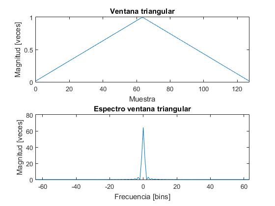
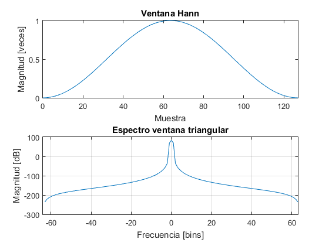
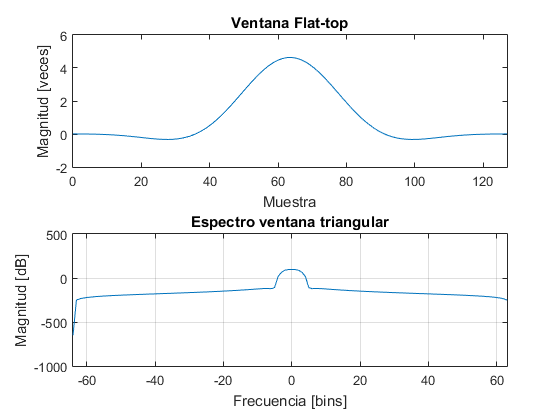
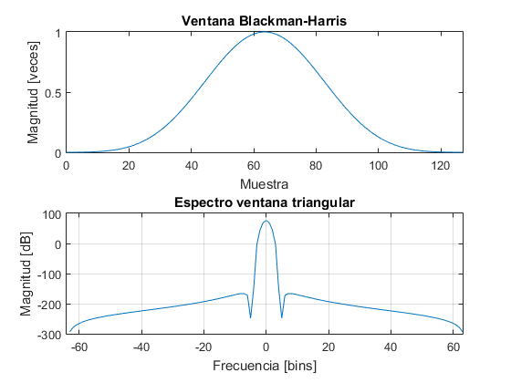
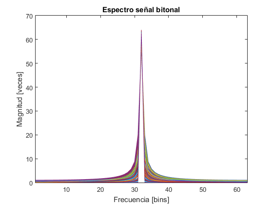

Trabajo Práctico 2
Ventanas y Fourier
Contents
Ejercicio 1
- Implementar ventanas
Triangular
% Ventana triangular function [ W ] = window_Triangular(N) n = transpose(0:N-1); W = 1 - abs(2 * n / (N + 1) - (N - 1) / (N + 1)); end
N = 128; w = window_Triangular(N); subplot(2, 1, 1); plot(0:N-1, w); title('Ventana triangular'); xlabel('Muestra'); xlim([0 N-1]); ylabel('Magnitud [veces]'); w_fft = abs(fft(w)); w_fft = [w_fft(N/2+1:N) ; w_fft(1:N/2)]; subplot(2, 1, 2); plot(transpose(-N/2:N/2-1), w_fft); title('Espectro ventana triangular'); xlabel('Frecuencia [bins]'); xlim([-N/2 N/2-1]); ylabel('Magnitud [veces]'); % A diferencia de los siguientes espectros, éste se encuentra medido en % veces debido a un problema visual que no muestra valores fuera de [-1 1].
Hann
% Ventana Hann function [ W ] = window_Hann(N) n = transpose(0:N-1); W = (1 - cos(2 * pi * n / (N - 1))) / 2; end
N = 128; w = window_Hann(N); subplot(2, 1, 1); plot(0:N-1, w); title('Ventana Hann'); xlabel('Muestra'); xlim([0 N-1]); ylabel('Magnitud [veces]'); w_fft = abs(fft(w)); w_fft = [w_fft(N/2+1:N) ; w_fft(1:N/2)]; subplot(2, 1, 2); plot(transpose(-N/2:N/2-1), 20*log(w_fft)); grid on; title('Espectro ventana triangular'); xlabel('Frecuencia [bins]'); xlim([-N/2 N/2-1]); ylabel('Magnitud [dB]');
Flat-top
% Ventana Flat-top function [ W ] = window_Flat_top(N) n = transpose(0:N-1); a0 = 1; a1 = 1.93; a2 = 1.29; a3 = 0.388; a4 = 0.032; W = a0 - a1 * cos(2 * pi * n / (N - 1)) + a2 * cos(4 * pi * n / (N - 1)) - a3 * cos(6 * pi * n / (N - 1)) + a4 * cos(8 * pi * n / (N - 1)); end
N = 128; w = window_Flat_top(N); subplot(2, 1, 1); plot(0:N-1, w); title('Ventana Flat-top'); xlabel('Muestra'); xlim([0 N-1]); ylabel('Magnitud [veces]'); w_fft = abs(fft(w)); w_fft = [w_fft(N/2+1:N) ; w_fft(1:N/2)]; subplot(2, 1, 2); plot(transpose(-N/2:N/2-1), 20*log(w_fft)); grid on; title('Espectro ventana triangular'); xlabel('Frecuencia [bins]'); xlim([-N/2 N/2-1]); ylabel('Magnitud [dB]');
Blackman-Harris
% Ventana Blackman-Harris function [ W ] = window_BlackmanHarris(N) n = transpose(0:N-1); a0 = 0.35875; a1 = 0.48829; a2 = 0.14128; a3 = 0.01168; W = a0 - a1 * cos(2 * pi * n / (N - 1)) + a2 * cos(4 * pi * n / (N - 1)) - a3 * cos(6 * pi * n / (N - 1)); end
N = 128; w = window_BlackmanHarris(N); subplot(2, 1, 1); plot(0:N-1, w); title('Ventana Blackman-Harris'); xlabel('Muestra'); xlim([0 N-1]); ylabel('Magnitud [veces]'); w_fft = abs(fft(w)); w_fft = [w_fft(N/2+1:N) ; w_fft(1:N/2)]; subplot(2, 1, 2); plot(transpose(-N/2:N/2-1), 20*log(w_fft)); grid on; title('Espectro ventana triangular'); xlabel('Frecuencia [bins]'); xlim([-N/2 N/2-1]); ylabel('Magnitud [dB]');
Ejercicio 3
- Errores de medición
N = 128; fs = 1e3; df = fs/N; R = 200; Y = zeros(N, R); for j = 1:R fr = 4 * rand - 2; f = N/4 * df + fr; [X, T] = Signal_GenerateSine(N, fs, 1, f); Y(:,j) = fft(X); end Y_ = abs(fft(Signal_GenerateSine(N, fs, 1, N/4 * df))); P = 1:N; y_abs = abs(Y); % P = 1:N/2; % y_abs = y_abs(P,:); subplot(1, 1, 1); plot(P-1, y_abs(:,1)); hold on; for j = 2:R plot(P-1, y_abs(:,j)); end hold off; title('Espectro señal bitonal'); xlabel('Frecuencia [bins]'); xlim([1 N/2-1]); ylabel('Magnitud [veces]'); err = zeros(R, 1); for j = 1:R err(j) = y_abs(N/4, j)^2 - Y_(N/4)^2; end err = sqrt(mean(err)); % plot(0:R-1, err);